The big picture
When an oil & gas company drills a horizontal well, the drill bit travels thousands of feet sideways through rock layers. Knowing which rock layer the bit is currently in — and how that layer rises or falls along the path — is called geosteering. Get it right and the well stays inside the productive zone; get it wrong and it drifts into worthless rock.
This challenge reframes geosteering as a machine-learning problem. For each well you are given a gamma-ray (GR) log — a measurement of natural radioactivity that acts as a fingerprint for each rock layer — plus the well's 3D path, and a nearby vertical reference well. From these you must reconstruct the geology, expressed as a single curve called TVT, for the part of the well where it is unknown.
Use the gamma-ray pattern of the horizontal well to figure out where it sits inside the layered rock — matching its GR fingerprint against a known vertical reference — and output a TVT value at every foot of the lateral.
Data available & file layout
Every well is described by two CSV files: the horizontal well itself and the vertical reference assigned to it.
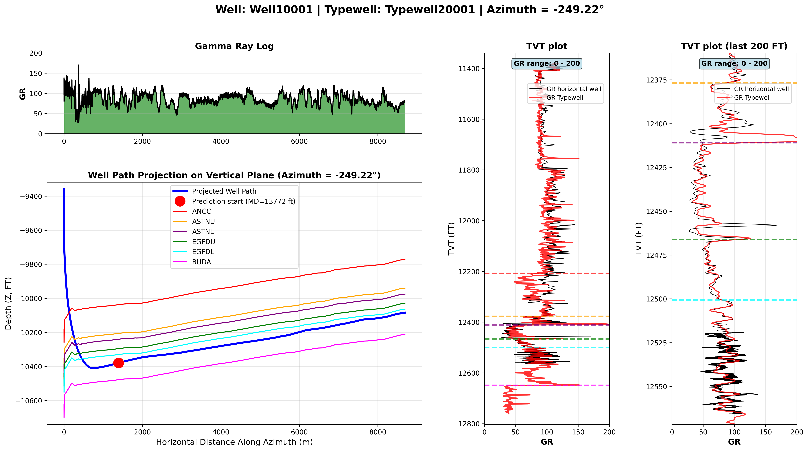
The deck uses illustrative names like Well10001__horizontal_well.csv. The actual Kaggle data uses short hash IDs instead, e.g.:
data/raw/train/000d7d20__horizontal_well.csv ← horizontal well
data/raw/train/000d7d20__typewell.csv ← its assigned typewell
data/raw/train/000d7d20.png ← a ready-made plot of the well
data/raw/test/ ... ← same pairs, target hiddenThere are 2,319 training well pairs. Each __horizontal_well.csv is paired 1-to-1 with a __typewell.csv sharing the same ID.
The horizontal well file
This is the well you are predicting for. Units are feet. The deck highlights a few columns, but the real training file carries more — including the geological formation tops.
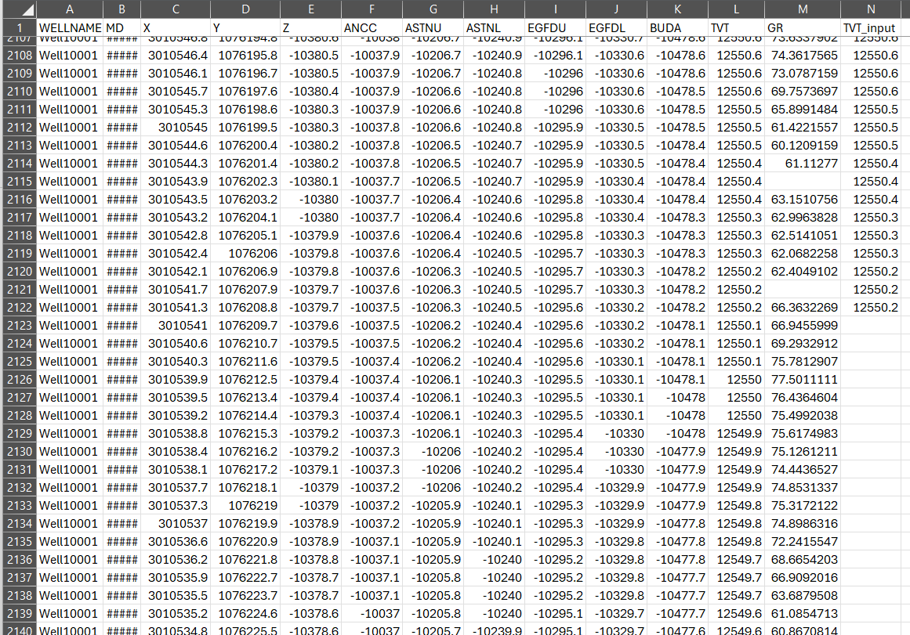
TVT (the answer) sits next to TVT_input — and TVT_input stops being filled in partway down, exactly at the Prediction Start point.| Column | Meaning | Available where? |
|---|---|---|
MD | Measured depth — distance travelled along the wellbore (its “length”) | Train & test |
X, Y, Z | 3D coordinates of each point of the well path | Train & test |
GR | Gamma-ray reading at each point (some values may be NaN) | Train & test |
TVT_input | Known geology values, but only up to the Prediction Start (PS) point | Train & test |
TVT | The target — geology of the wellbore at every point | Train only |
ANCC, ASTNU, ASTNL, | Top depth of each named geological formation — the layer markers | Train only |
The test horizontal files contain only MD, X, Y, Z, GR, TVT_input. The target TVT and all six formation-top columns are removed. So at inference time your model must recover geology from trajectory + gamma ray + the partial TVT_input + the typewell — nothing more.
The typewell (vertical) reference
Each horizontal well is paired with exactly one typewell — a nearby vertical well that has logged the full layer cake from top to bottom. Because it is vertical, its TVT axis is unambiguous and always fully known. It is your “ground-truth ruler” for what each rock layer's GR fingerprint looks like.
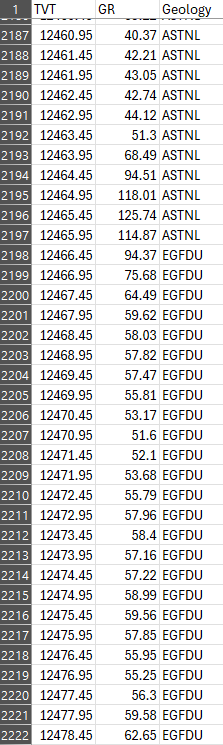
TVT (depth in the vertical well), GR (gamma ray at that depth), and Geology (the name of the rock layer at that depth).| Column | Meaning |
|---|---|
TVT | True vertical thickness — depth measured straight down the layer cake |
GR | Gamma-ray value at each depth of the vertical well |
Geology | Name of the geological layer (e.g. ANCC, BUDA, EGFDU …) |
The Geology labels in the typewell are the same names as the formation-top columns in the horizontal file (ANCC, ASTNU, BUDA, …). That is the bridge: a GR pattern at a known TVT in the typewell tells you which named layer the horizontal well is in when it shows a matching GR pattern.
The goal: turn GR into TVT
The single objective of the challenge:
- The typewell's TVT is always known.
- The horizontal well's TVT is known only up to the Prediction Start (PS) point (that is what
TVT_inputgives you). - Your job: compute TVT for every point beyond PS, using the horizontal well's
X, Y, ZandGRtogether with the typewell'sTVTandGR.
For training well 000d7d20: the file has 5,278 rows, but TVT_input is filled for only the first 1,442 of them. The submission file then asks for exactly 3,836 predictions for that well — and 5,278 − 1,442 = 3,836. So you predict every 1-ft step after PS, and not a single step before it.
Reading GR signatures: is the well climbing or sinking?
The core intuition. As the bit moves along the lateral, the GR it records is the same fingerprint the typewell recorded vertically — just stretched or reversed depending on whether the well is moving up or down through the layers. By matching the lateral GR pattern to the typewell GR, you can tell which way TVT is moving.
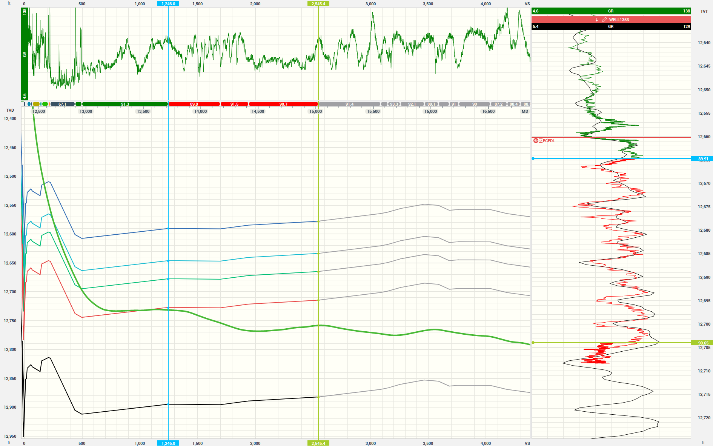
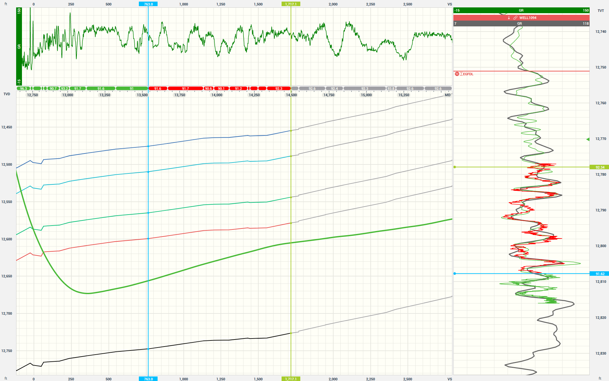
Rock layers have a characteristic GR sequence (sandy = low GR, shaly = high GR, etc.). That sequence is fixed. So when the lateral's GR replays that sequence forwards, the well is going deeper (TVT up); when it replays it backwards, the well is coming back up (TVT down). The prediction problem is essentially aligning the lateral GR trace to the typewell GR trace.
When geology is flat: constant TVT
If the well is running along a single layer rather than crossing layers, its GR barely changes — and that means TVT is roughly constant. Three regimes to recognize:
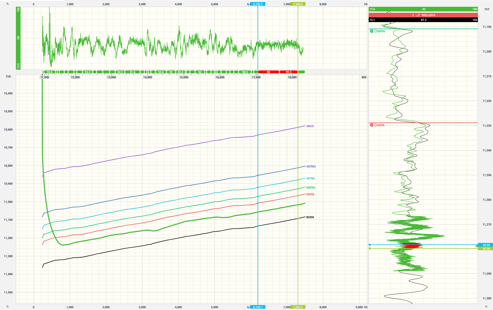
Video: how GR behavior reveals TVT
This animation from the deck shows the relationship in motion — as the well advances, watch how each twist in the gamma-ray curve corresponds to the well climbing or sinking through the geology.
docs/assets/media1.mp4.)Resolution: the lateral GR is sharper than the typewell GR
An important practical hint from the deck. The gamma-ray recorded along the horizontal well has higher resolution than the typewell's GR — it captures finer detail of the same layers.
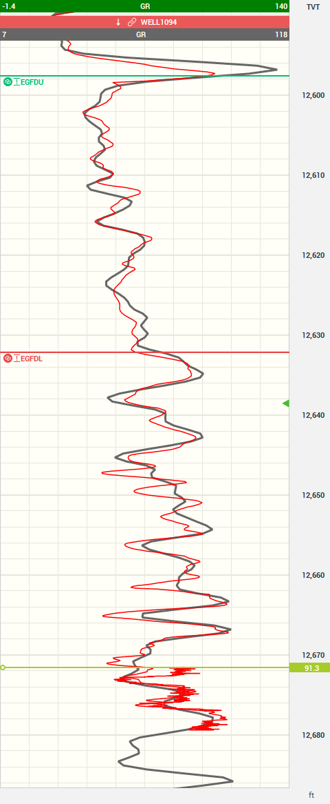
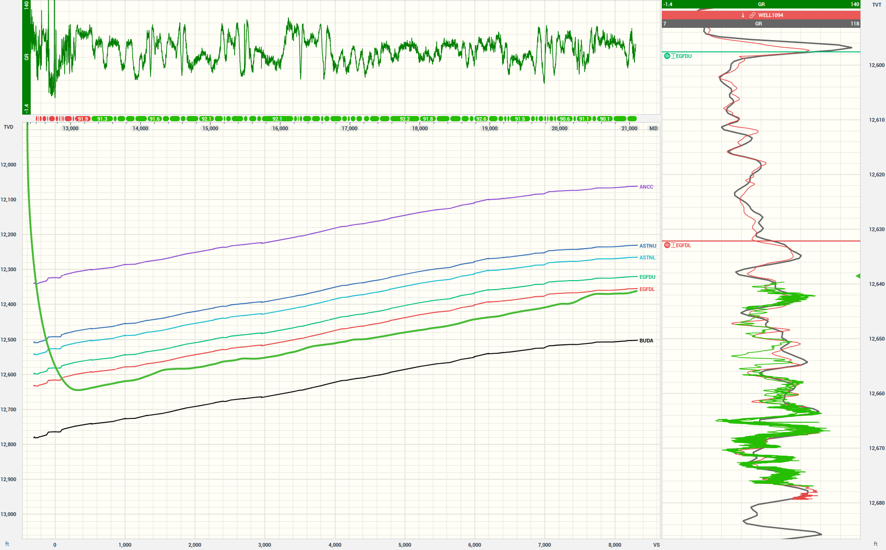
It may be better to use the high-resolution GR from the horizontal well before the PS point — combined with the deeper TVT data you already know — to correlate and extend across the rest of the lateral, rather than relying solely on the lower-resolution typewell GR.
Map view of all wells
The training and validation wells are not isolated — they sit in a shared field. Their map positions matter because neighboring wells pass through the same geology.
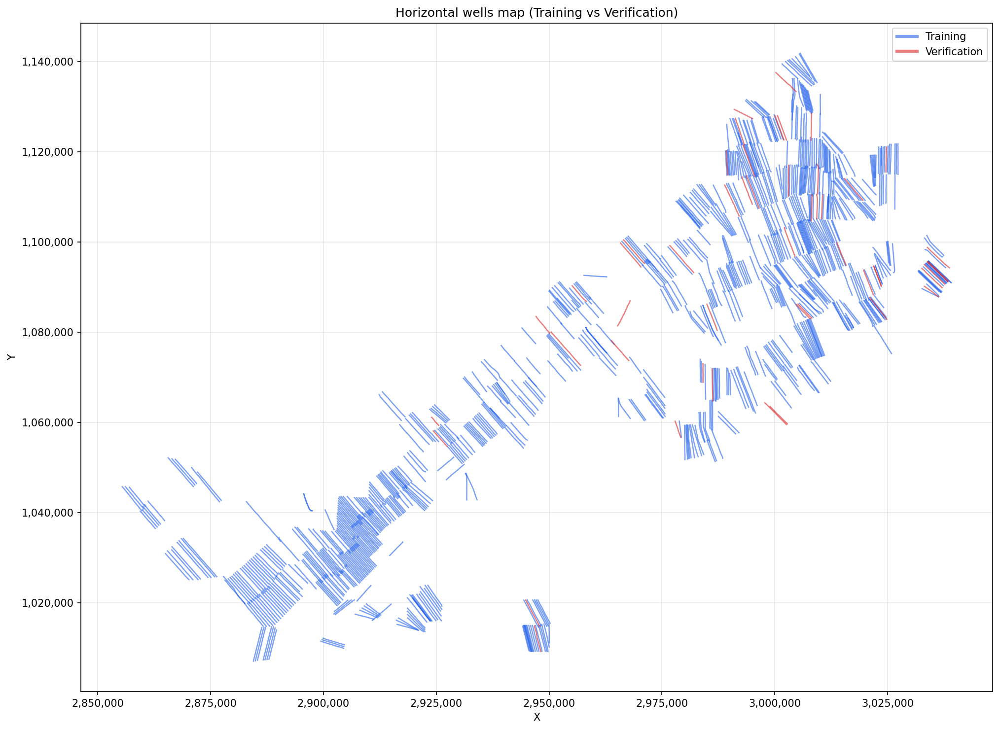
3D view of all wells
The same wells in three dimensions, showing how the laterals stack vertically and how the geology dips across the field.
docs/assets/media2.mp4.)Geological dip and drilling azimuth
Rock layers are rarely perfectly horizontal — they dip (tilt). How much dip a well “sees” depends on the azimuth (compass direction) it is drilled in: drill along the dip direction and TVT changes fast; drill across it and the geology looks almost flat.
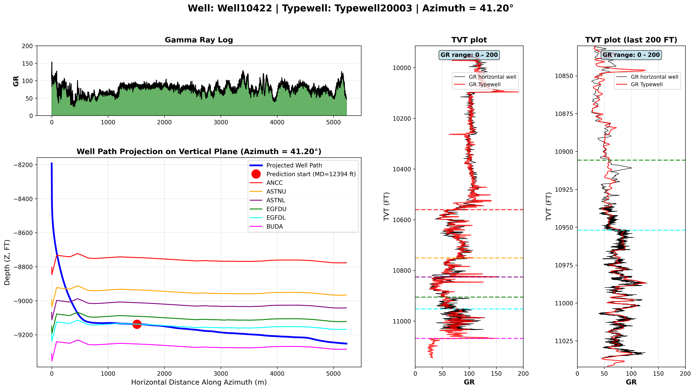
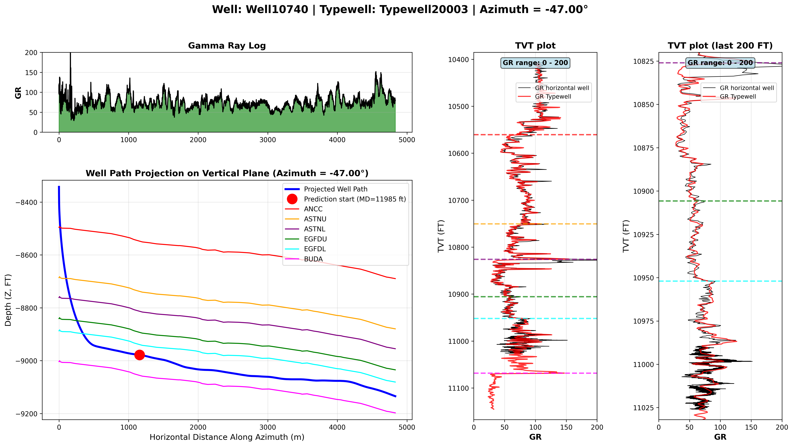
The azimuth of the horizontal well (recoverable from its X, Y path) sets your expectation for how steeply TVT should change. A model that ignores trajectory direction will mis-predict the rate of TVT change.
Offset wells help predict the current well
Because dips behave consistently across a small area, the geology of an offset well (a neighbor) is a strong prior for the well you are predicting.
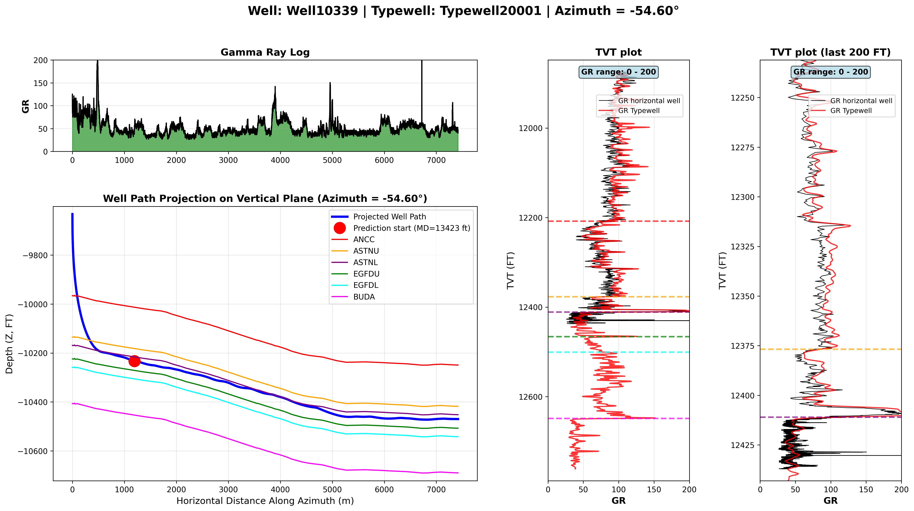
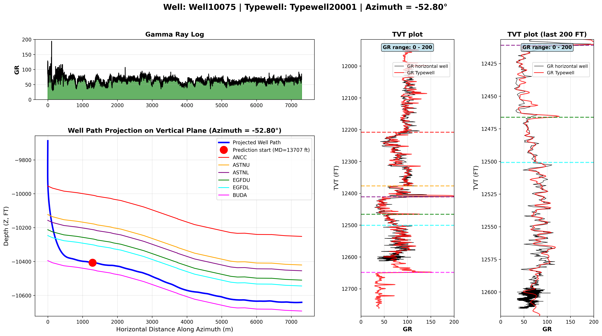
The map coordinates (X, Y) aren't just for computing azimuth — they let you find each well's spatial neighbors and borrow their (known) TVT behavior. This is a route to beating a per-well-only model.
How predictions are scored
Each horizontal well has TVT values to predict at a one-foot step. The error at each predicted point is:
dTVT = manualTVT − predictedTVT (per predicted point)and the overall score is the Root Mean Squared Error of all the dTVT values across every predicted point:
RMSE = sqrt( mean( dTVT² ) )Squaring means large misses are punished disproportionately. A model that is roughly right everywhere beats one that is perfect in most places but wildly wrong in a few. Getting the broad TVT trend (the up/down/flat regime) right matters more than chasing every wiggle.
sample_submission.csv has two columns, id and tvt, where each id is <wellID>_<rowIndex> — one row per predicted point after PS:
id,tvt
000d7d20_1442,0.0
000d7d20_1443,0.0
...Glossary & modeling cheatsheet
| Term | Meaning |
|---|---|
MD | Measured Depth — length travelled along the wellbore |
TVT | True Vertical Thickness — depth into the geological layer cake; the prediction target |
TVT_input | TVT that is known up to the Prediction Start point |
GR | Gamma Ray — natural radioactivity log; the rock-layer fingerprint |
PS | Prediction Start — the MD where known TVT stops and prediction begins |
| Typewell | The paired vertical reference well with fully known TVT/GR/Geology |
| Dip / Azimuth | Tilt of the layers / compass direction of the well — together they set how fast TVT changes |
| Offset well | A spatial neighbor whose known geology informs the current well |
A reasonable modeling recipe
- Anchor on the typewell. Build the GR-vs-TVT signature curve from the typewell — your reference for what each layer's GR looks like.
- Use the known segment. Calibrate using the lateral's GR and TVT before PS (high resolution, ground-truth TVT) to learn this well's local GR↔TVT mapping.
- Align past PS. Extend by matching/aligning the after-PS lateral GR against the reference, tracking whether TVT is rising, falling, or flat.
- Constrain with geometry. Use
X, Y, Zand azimuth to bound how quickly TVT can plausibly change. - Borrow from neighbors. Pull TVT priors from spatially close offset wells.
- Optimize for RMSE. Prefer smooth, trend-correct predictions over noisy fits — outliers are expensive.